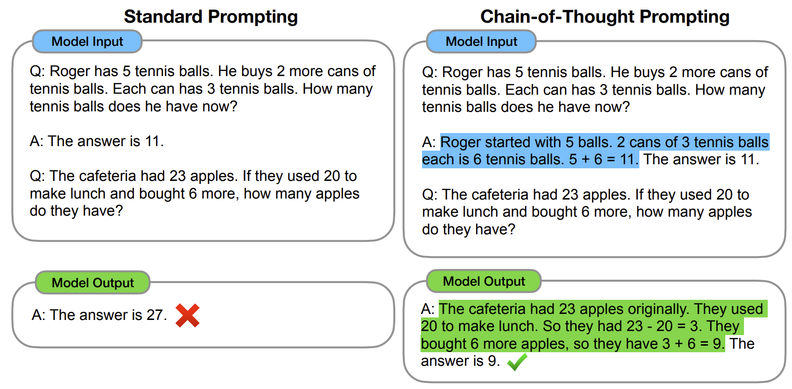
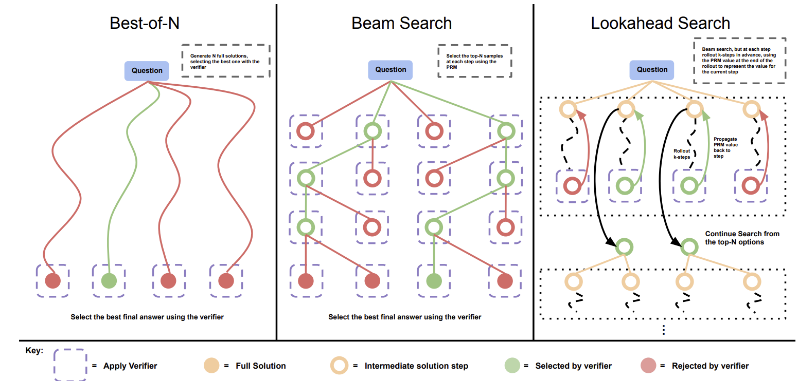
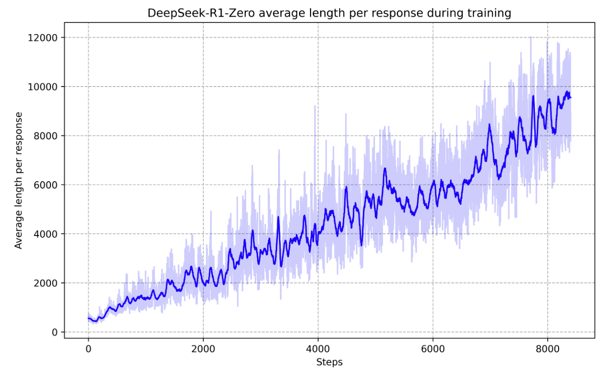
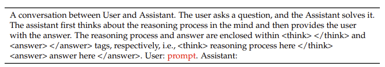
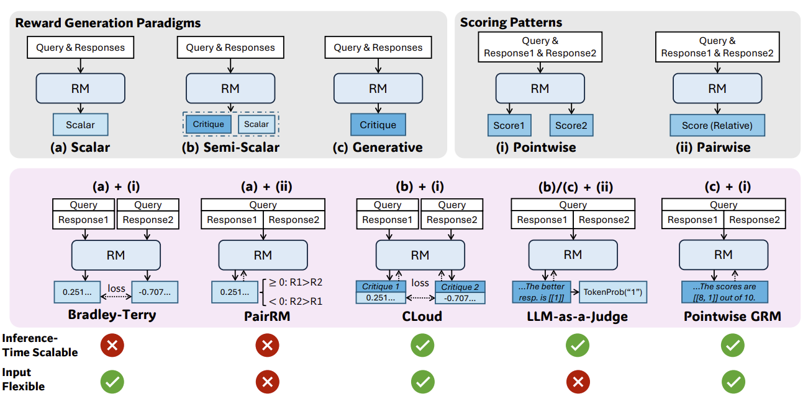
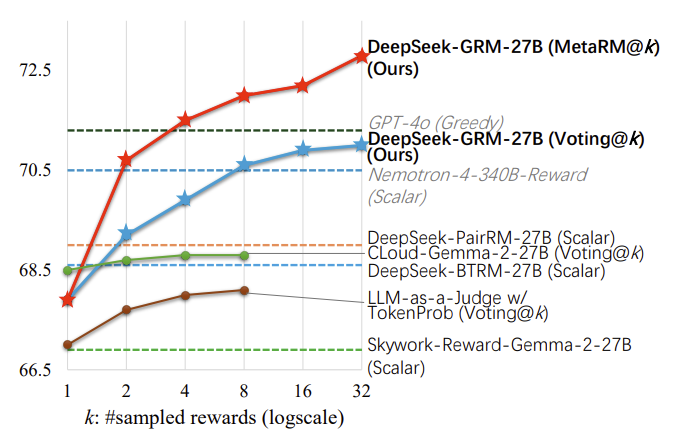
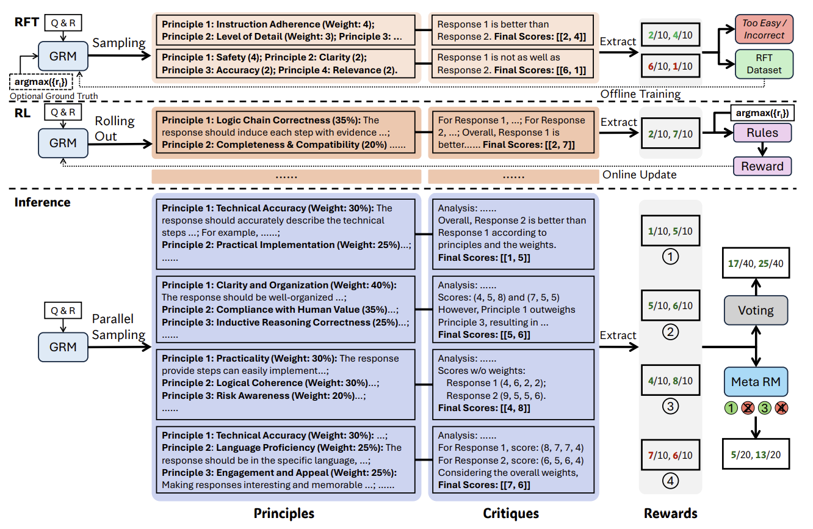
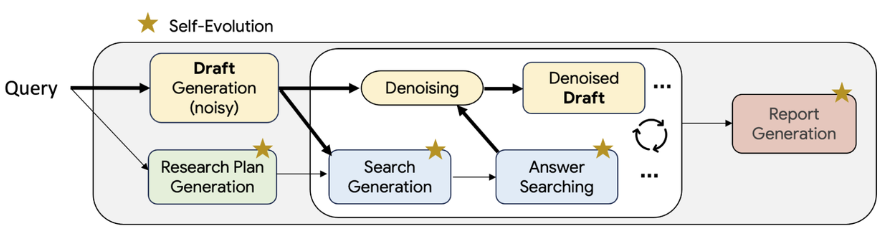
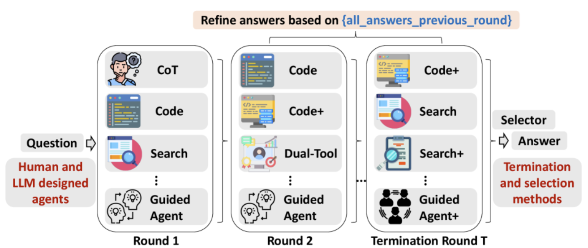

03. Inference Time Scaling#
Author by：侯宇博
推理端的 scaling law 更关注 推理延迟、显存、计算复杂度随模型规模和上下文长度变化的规律。其中Inference/test time scaling，其核心思想是在模型推理（Inference）阶段，通过投入更多计算资源以生成更多的输出 token，进而增强模型的逻辑推理（Reasoning）能力。
该方法的基本原理在于，生成单个 token 的过程（即一次模型前向传播）所包含的计算量是固定的。对于需要多步逻辑推演的复杂问题，模型无法在单次计算中完成求解。因此，必须通过生成一系列包含中间步骤的文本（即更多的 token），来逐步展开其“思考”过程，从而解决问题。
那么有哪些方法可以帮助模型产生中间推理步骤呢？
1 推理扩展的起点：思维链提示#
思维链提示（Chain-of-Thought Prompting）通过在少样本示例中展示一系列中间推理步骤，而不仅仅是最终答案，来引导大型语言模型在解决问题时，也自主地生成类似的“思考过程”，从而释放其内在的复杂推理潜力。

然而，思维链提示需要为特定任务精心设计推理示例，这限制了其通用性与易用性。一个自然而然的问题是：能否让模型在没有任何范例的情况下，仅根据问题本身就自动生成思维链？
2 推理扩展的深化：模型调优与搜索策略#
为了让模型能自主生成更高质量的推理过程，研究者们首先尝试在包含推理轨迹的数据集上进行监督微调（SFT），以引导模型产生中间推理步骤。 进一步地，为提升每个推理步骤的准确性，研究者们引入了过程监督奖励模型（Process-supervised Reward Model, PRM）。PRM 负责对推理链中的每一步进行打分，从而精细地评估其质量，并据此指导模型生成更优的推理路径。这种指导作用主要体现在两个方面：数据筛选与推理时优化。
2.1 数据筛选与模型迭代#
通过对模型生成的推理路径进行评分，可以筛选出高质量的推理数据，用于下一阶段的模型训练，从而实现性能的持续迭代优化。
2.2 推理时决策优化#
在推理阶段，可以让模型针对同一问题生成多个候选答案（即推理路径），并利用 PRM 从中选择评分最高的一条作为最终输出。这个过程通常依赖于特定的搜索算法来高效地探索可能的推理空间。下面介绍三种常用的搜索方案。

2.2.1 最优解采样（Best-of-N）#
该方法首先针对一个给定的问题，独立采样生成 N 个完整的解答（推理路径）。随后，PRM 对这 N 个解答的每一步进行评估并计算累积得分。最终，选择总分最高的那个解答作为最终输出。
2.2.2 集束搜索（Beam Search）#
这个方法在推理的每一步都维持一个包含 M 个候选路径（即“集束”）的集合。具体来说，从问题开始，模型首先生成 N 个可能的“第一步”推理。PRM 对这 N 个第一步进行评分，并保留得分最高的 M 个。在下一步中，从这 M 个路径出发，各自再生成 N 个后续步骤，并再次进行评分和筛选，始终保持集束大小为 M。这个过程不断迭代，直到生成完整的解答。
2.2.3 前瞻搜索（Lookahead Search）#
前瞻搜索的核心思想是通过“预演”未来的推理步骤来评估当前步骤的优劣。在选择“第一步”时，算法会先生成 N 个候选步骤。对于每个候选，它会继续向前探索生成 K 个后续步骤（形成一条短路径）。然后，PRM 仅评估这条短路径的最终状态（最后一个step）。得分最高的 M 个最终状态所对应的“第一步”被认为是最佳选择并被保留下来。算法从这些被选中的步骤出发，重复此过程，直到构建出完整的解答。
2.3 强化学习指导的推理#
以上介绍的方法对模型推理能力的提升有限。PRM依赖对中间步骤的细粒度奖励，但标注成本高且易受奖励劫持（Reward Hacking）影响。 而搜索算法在复杂任务中面临搜索空间爆炸问题，难以规模化。
OpenAI 的 o1 系列模型在此方向上取得了显著进展，但其训练方法并未公开。
一个提供了新思路的公开研究是 DeepSeek 团队提出的 Deepseek-R1-Zero 模型，它完全通过强化学习来激发模型的推理潜力。 该模型的核心是 GRPO (Group Relative Policy Optimization) 框架。与传统的 PPO 等强化学习算法相比，GRPO 的关键创新在于无需训练一个独立的价值函数模型来估计每个行为的“优势”，从而避免了额外的训练开销。
GRPO 的具体做法是： a. 让模型针对同一个问题生成一组候选答案。 b. 通过比较组内各个答案获得的奖励，估算出每个答案在组内的相对优势。 c. 利用这个相对优势的估计值来直接指导策略优化。
在训练中，模型专注可验证任务，比如数学、编程、逻辑等可以通过程序自动验证答案正确性的领域。得益于任务的可验证性，可以采用基于规则的奖励，奖励信号直接与最终答案的正确性挂钩。这种方式完全取代了对PRM的依赖。
通过强化学习，模型自发地学会了延长“思考时间”来解决更复杂的问题。这种能力的提升并非源于外部的显式设计，而是模型为了获得最终奖励而涌现出的内部策略，最终让 DeepSeek-R1-Zero 获得了通过扩展推理时计算来解决复杂任务的强大能力。

值得注意的是，由于 DeepSeek-R1-Zero 是直接在基座模型 DeepSeek-V3-Base 上进行强化学习，并未经过SFT来适配特定的对话或指令格式，因此其输入提示被设计为更基础的文本补全形式，并在提示构建中地融入了思维链提示，通过结构化引导来激发模型的逐步推理能力。

2.4 通用奖励模型#
基于规则的奖励在处理可验证任务时非常有效，但对于难以量化评估的任务，其作用就受到了限制。因为奖励的标准更加多样化和复杂，且通常没有明确的参考或真实标准。因此，通用奖励模型对于提高 LLMs 在更广泛应用中的性能至关重要，无论是从训练后角度（例如大规模强化学习）还是从推理角度（例如奖励模型引导搜索）。此外，RM 性能应通过增加训练计算量和推理计算量来提升。
奖励模型的设计主要由其奖励生成范式与评分模式这两个维度决定。这两个因素共同决定了奖励模型在推理时的扩展能力与输入设计的灵活性。
奖励生成范式 (Reward Generation Paradigms) 主要有三种：
(a) 标量 (Scalar)：直接针对给定的输入（Prompt）和回复（Response），输出一个标量奖励值。该标量值代表了对回复质量的直接量化评估。
(b) 半标量 (Semi-Scalar)：在输出标量奖励值的同时，还会生成一段文本形式的评语（Critique），用以解释评分的依据。
(c) 生成式 (Generative)：完全通过生成文本评语（Critique）的形式来提供反馈。奖励值需要从生成的文本中解析提取（例如，评语中直接包含分数，或通过自然语言分析来推断偏好）。
评分模式 (Scoring Patterns) 主要有两种：
(i) 点式 (Pointwise)：对每个回复进行独立评分。模型可以接受单个或多个回复作为输入，并为每个回复输出一个绝对的评估分数。
(ii) 成对 (Pairwise)：通过成对比较来评估回复的相对优劣。模型通常接收一对回复作为输入，并判断哪一个更优。虽然此方法主要处理成对比较，但通过特定的技术也可以扩展至对多个回复进行排序。
如下图所示，通过组合上述三种奖励生成范式和两种评分模式，可以衍生出五种主流的奖励模型架构。

(a)+(i). 标量 (Scalar) + 点式 (Pointwise) - 代表方法：Bradley-Terry。该模型基于成对的偏好数据进行训练，最终学习到一个能够为每个回复独立生成标量分数的函数。
(a)+(ii). 标量 (Scalar) + 成对 (Pairwise) - 代表方法：PairRM。该模型在训练时接收一对回复作为输入，并输出一个标量值。该标量值的符号表示模型的偏好方向。例如，正数偏爱第一个回复，负数偏爱第二个，其绝对值大小则可以表征偏好的强度。
(b)+(i). 半标量 (Semi-Scalar) + 点式 (Pointwise) - 代表方法：CLoud。该模型首先会生成一段文本评语，分析并指出回复的优缺点。随后，模型会基于这段评语，输出一个标量奖励作为最终的量化评估。
(b)/(c)+(ii). 生成式 (Generative) + 成对 (Pairwise) - 代表方法：LLM-as-a-Judge。该模型接收一对回复，并生成一段文本评语来判断哪个回复更优，同时解释原因。此外，还可以将特定指示性词元（Token）的生成概率作为标量奖励。例如，在生成的评语“回复[1]更好，因为…”中，词元“[1]”的生成概率便可被用作量化的奖励信号。
(c)+(i). 生成式 (Generative) + 点式 (Pointwise) - 代表方法：Pointwise GRM。该模型接收一个或多个回复，并为每个回复生成详尽的文本评语。评语中通常会直接包含该回复在不同评估维度下的具体得分。
不同的模型组合在推理时扩展能力和输入格式灵活性上表现各异。
在推理时扩展能力方面，生成式和半标量模型具备显著优势。由于它们的输出是基于概率分布的采样，多次推理可以产生多样化的评语或判断依据。通过聚合这些多样化的输出（例如，采用投票或平均策略），可以获得更鲁棒、更准确的最终评估。相比之下，标量奖励模型通常为确定性输出，对于同一输入，多次推理仅产生相同的标量值，因此无法通过采样和聚合来提升性能。
在输入格式灵活性方面，点式（Pointwise）评分模型表现更优。它可以独立地为每个回复打分，因此天然支持对单个、成对或多个回复进行评估。而配对（Pairwise）评分模型的核心是比较两个回复的相对优劣，因此原生不支持对单个回复进行评分，在处理多个回复时也需要进行额外的扩展。
综合来看，(b)半标量 + (i)点式 和 (c)生成式 + (i)点式 这两种组合在理论上同时具备了推理时扩展能力和输入格式灵活性。然而，实验结果（如下图所示）表明，(b)+(i) 组合的代表方法 CLoud（绿线）的性能并未随采样次数的增加而显著提升。
其根本原因在于，半标量模型虽然能生成多样化的评语，但其最终的标量奖励通常是通过一个独立的价值头或固定的转换规则从评语中提取的。如果这个提取过程对评语的语义细节不够敏感，或者标量值的输出范围有限，那么即使多次采样生成了内容各异的评语，所对应的标量奖励也可能高度集中，从而限制了通过聚合来提升性能的潜力。

实验结果表明，(c)生成式 + (i)点式 组合的 Pointwise GRM 模型表现最佳。为了有效训练该模型，DeepSeek 团队提出了 SPCT (Self-Principled Critique Tuning) 框架。SPCT 的核心思想是让 GRM 学会自适应地生成高质量的“原则”（Principles），并基于这些原则来指导“评语”（Critiques）的生成。这种以原则驱动的奖励生成机制，提升了奖励信号的质量，为实现高效的推理时扩展奠定了坚实基础。

SPCT 的训练过程主要包含两个阶段：
1. 拒绝式微调 (Rejective Fine-Tuning, RFT): 作为 SPCT 的冷启动阶段，RFT 的目标是训练 GRM 生成格式正确且内容合理的原则和评语。其数据构建流程如下：首先，使用一个预训练的 GRM（即一个大语言模型）为每个数据点（包含一个查询、多个回复及最优回复的真实标签）生成 N 组候选的原则与评语。随后，通过一套拒绝采样策略对生成的数据进行筛选：(1) 剔除预测结果不正确的样本；(2) 剔除所有 N 次采样预测均正确的“过于简单”的样本。通过这种方式过滤掉低质量和低信息量的数据后，用筛选出的高质量数据对 GRM 进行微调。
2. 基于规则的强化学习 (Rule-based GRPO): 在 RFT 之后，采用基于规则的 GRPO 对 GRM 进行进一步的强化学习微调。此阶段的核心目标是提升 GRM 区分最优回复的能力，从而直接增强其在推理时扩展场景下的性能。
经过 SPCT 训练的 GRM（即 DeepSeek-GRM）具备推理时扩展能力。通过并行进行多次采样，模型可以生成多样化的原则与评语组合。随着采样规模的扩大，模型能够基于更丰富的视角进行判断，输出更细粒度的奖励信号。
在最终的聚合阶段，为了进一步提升准确性，除了可以使用简单的投票机制，SPCT 还引入了一个元奖励模型 (Meta RM)。该元奖励模型是一个点式的标量模型，其任务是评估 DeepSeek-GRM 生成的每组原则与评语的质量。通过元奖励模型输出的分数，可以对多次采样的结果进行筛选，优先采纳高质量的评判，从而得到更精确的最终奖励。
3 推理扩展的延伸：智能体中的高级应用#
推理时扩展技术不仅局限于提升大语言模型的推理能力和奖励模型的准确性，其应用也正向智能体（Agent）领域延伸。
3.1 Test-Time Diffusion Deep Researcher#
谷歌提出的 TTD-DR (Test-Time Diffusion Deep Researcher) 框架，便是一个典型的探索。该框架利用一个深度研究智能体（Deep Research Agent），通过检索高质量信息，来不断地起草和迭代修订自身的报告。
TTD-DR 的工作流程模仿了人类撰写复杂主题报告时的核心步骤：规划、起草、研究和根据反馈迭代修订。
具体而言，TTD-DR 首先接收用户查询作为输入，并生成一份初步草稿。这份草稿不仅是内容的起点，更是一个动态演化的基础，用以指导后续的研究计划。随后，框架进入一个核心的迭代循环：通过一个检索增强的去噪过程，在每个步骤中不断检索新的高质量信息来优化和重写草稿。 更进一步，TTD-DR 还引入了一套自进化算法，该算法会持续地优化从研究规划到最终报告生成的整个流程。这种“报告级精炼”与“流程级自进化”的强大组合，确保了最终能够产出逻辑连贯、内容详实的高质量报告。

3.2 Tool-Use Mixture#
如果说 TTD-DR 探索的是单个智能体的自我进化，那么 TUMIX 框架则将目光投向了群体智慧的力量，通过多个智能体的并行协作与思想碰撞来应对复杂问题。
TUMIX (Tool-Use Mixture) 是一个创新的多智能体集成框架。TUMIX 的核心机制是并行运行多个智能体，每个智能体都采用独特的工具使用策略和解题路径。在整个过程中，所有智能体会基于原始问题和其他智能体的回答，进行多轮的迭代式分享与精炼。在每一轮迭代中，系统会将上一轮所有智能体的回复与原始问题拼接在一起，构成一个全新的联合提示词。这个提示词将被分发给下一轮的所有智能体，以生成更精进的答案。最后使用 LLM-as-Judge 判断是否应停止迭代。

4 总结与思考#
本文探讨了推理时扩展（Inference-Time Scaling）在提升大语言模型能力方面的多样化应用。其核心思想一脉相承：通过在推理阶段投入更多计算资源，来换取更高质量的输出。这一理念贯穿了从基础推理到复杂智能体应用的多个层面：
在基础推理层面：从早期的思维链提示，到基于过程监督奖励模型的搜索算法，再到完全由强化学习驱动的自发推理，其本质都是通过生成更长、更优的推理路径来解决复杂问题。
在奖励模型层面：为了给上述推理过程提供更精准的指导，通用奖励模型自身也开始利用推理时扩展。通过对生成式奖励模型的多次采样与聚合，可以获得比传统标量模型更稳定和细粒度的奖励信号，为训练更强的推理模型奠定了基础。
在智能体层面：推理时扩展的应用进一步深化。无论是通过自我迭代增强单个智能体的深度研究能力，还是发挥多智能体群体智慧的优势，都证明了增加推理时的计算和策略多样性，是实现更高级智能的关键路径。